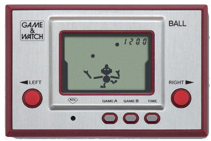

Introduction
Everyone needs a hobby, whether it be building lego, playing video games or exercise. Hobbies are things that not everyone might enjoy but you do. Here are a few of my hobbies below
Gardening
")
Prior to my housemate moving to Japan, he used to manage and tend to the garden and it all seemed out of my reach. After he left in 2020, nobody was able to tend to the herbs and tomato plants that he raised. I decided it would be terrible to let his hard work go to waste and now I have become quite adept at identifying and propagating different types of herbs and fruit. Presently my favorite fruit to grow is chilli and I have around 8 chilli plants as of writing this.
If you are interested in learning some easy ways to get started in gardening, I have provided some tips on this website which can be accessed by clicking gardening tips option in the navigation bar or by clicking here.
Gaming
{kind=link}
Gaming has been a hobby of mine since I was 5 years old and was gifted a gameboy for my birthday. My first game was Game and Watch Gallery, which was a mixture of both Modernized and Classic Game and Watch games. The modern versions featured mario characters such as Yoshi, Mario and Princess Peach.
The first non handheld console was a Sega Megadrive. When we made the leap from the Sega System to the first Playstation I was blown away with the change in graphics from 2d to 3d. Metal Gear Solid has to be my favorite franchise thus far.
Anime
")
I love anime. When I first started watching anime I did not know it was from Japan at first. I thought they were cartoons the same way Scooby-Doo was, with a different style. The first anime I ever watched was Dragon Ball Z. What got me into lesser main stream anime however was when I was watching an anime called Tokyo Mew Mew in English and it abruptly stopped being dubbed. I wanted to know the rest so I sought it out online.
The english dub was very cute and innocent featuring magical girls. However when I saw the Japanese dub, I realized how much was censored and how gory and violent the anime actually was and I was very intrigued upon realizing that anime was not just 'cartoons for children'. Since then I have gone down a rabbit hole and seen all kinds of anime. I love it. Whenever I go to Japan I always bring back figurines for myself and friends.